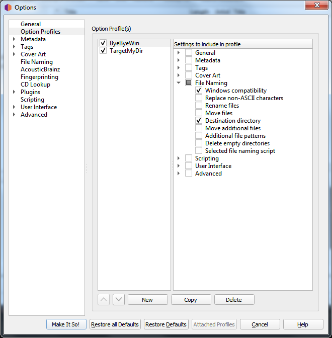
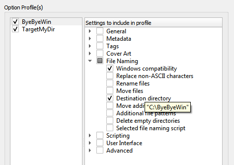
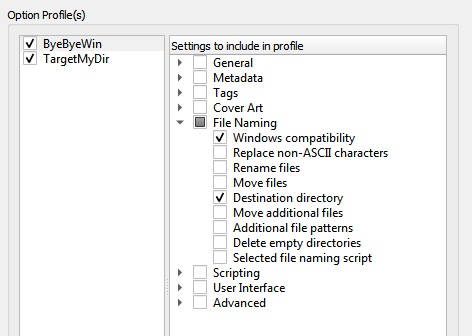
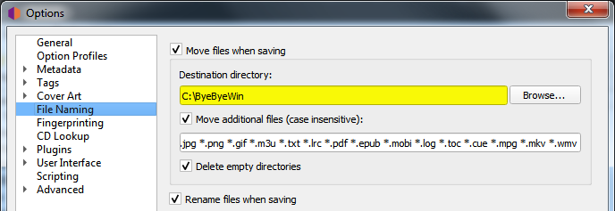
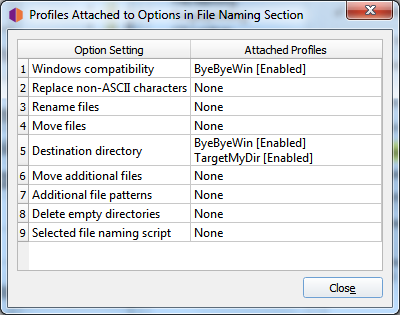

Profils d’options¶
Depuis la version 2.7, Picard prend en charge plusieurs profils qui permettent à l’utilisateur de passer rapidement d’une option à l’autre.
Comment fonctionnent les profils d’option¶
Un profil est défini par un ensemble d’options qu’il gère. Par exemple, un profil peut inclure des paramètres pour le nommage des fichiers, tels que le répertoire cible et le script de nommage des fichiers à utiliser, tandis qu’un autre profil peut inclure des paramètres différents pour les mêmes options ou des options entièrement différentes (ou certaines de ces options). Les profils sont empilés et traités dans l’ordre spécifié par l’utilisateur, de haut en bas, le niveau le plus bas étant le profil « paramètres utilisateur » du système. Chaque profil défini par l’utilisateur peut être activé ou désactivé indépendamment des autres profils définis par l’utilisateur. Le profil « paramètres utilisateur » du système est toujours activé et comprend toutes les options.
Lorsqu’une valeur d’option est récupérée dans le cadre du traitement de Picard, elle provient du premier profil activé de la pile qui gère cette option. Initialement, la pile de profils ne contient que le profil « paramètres utilisateur » du système, qui contient les paramètres par défaut de l’utilisateur.
Exemple d’utilisation des profils¶
Dans cet exemple, l’utilisateur souhaite définir un ensemble d’options avec des valeurs alternatives, dans ce cas un répertoire cible où les fichiers audio sont sauvegardés (option move_files_to).
L’utilisateur crée un nouveau profil (nommé « TargetMyDir »), lui ajoute l’option « move_files_to », et active ce profil. La pile est maintenant:
[x] TargetMyDir move_files_to
[x] user settings move_files_to [plus all other settings]
Ils changent la valeur de move_files_to (en « target_my_dir ») pour ce nouveau profil.
Puisque le profil « TargetMyDir » est activé, la valeur de move_files_to est récupérée à partir de ce profil. Les « paramètres utilisateur » ont toujours l’ancienne valeur de move_files_to.
Maintenant l’utilisateur veut travailler sur un autre ensemble de fichiers musicaux, il veut désactiver la « compatibilité avec Windows » pour cet ensemble et les sauvegarder dans le répertoire « pas_pour_windows ».
Ils créent un nouveau profil (nommé « ByeByeWin »), ajoutent les options move_files_to et windows_compatibility, et l’activent. Maintenant la pile ressemble à ça:
[x] ByeByeWin move_files_to windows_compatibility
[x] TargetMyDir move_files_to
[x] user settings move_files_to windows_compatibility [plus all other settings]
Ils changent les valeurs de move_files_to (en « not_for_windows ») et windows_compatibility (en false) pour ce nouveau profil. Maintenant, lorsqu’ils traitent leurs fichiers, ceux-ci sont enregistrés dans le répertoire « ByeByeWin » move_files_to, avec windows_compatibility = false.
L’utilisateur souhaite maintenant enregistrer à nouveau des fichiers dans le répertoire cible « TargetMyDir », avec ses options habituelles. Pour ce faire, il suffit de désactiver le profil « ByeByeWin » (qui peut être réactivé ultérieurement si nécessaire). La pile ressemble à cela:
[ ] ByeByeWin move_files_to windows_compatibility
[x] TargetMyDir move_files_to
[x] user settings move_files_to windows_compatibility [plus all other settings]
Enfin, pour revenir à son répertoire de sortie habituel, l’utilisateur n’a qu’à désactiver le profil « TargetMyDir » pour que la pile soit:
[ ] ByeByeWin move_files_to windows_compatibility
[ ] TargetMyDir move_files_to
[x] user settings move_files_to windows_compatibility [plus all other settings]
Gestion des profils d’options¶
Toute la gestion des profils d’option s’effectue dans la page Profils d’option disponible à partir de l’élément de la barre de menu. À partir de cet écran, vous pourrez ajouter, copier, modifier, supprimer, activer et désactiver des profils, ainsi que définir l’ordre de la pile de profils.
Initialement, la liste des profils sera vide. Pour créer un nouveau profil, cliquez sur le bouton Nouveau. Cela créera un profil sans aucune option sélectionnée pour le profil à gérer. Pour renommer le profil, faites un clic droit sur le nom du profil et sélectionnez la commande . La liste des options que le profil doit gérer est sélectionnée dans la liste du volet de droite. Les options peuvent être sélectionnées par groupe ou individuellement. Les groupes peuvent être développés pour voir les options individuelles appartenant à ce groupe.
{kind=link}
Vous pouvez voir la valeur actuellement attribuée au paramètre d’option d’un profil en plaçant votre curseur sur le paramètre dans la liste. La valeur s’affiche sous forme d’infobulle pour le paramètre.
{kind=link}
L’ordre de la pile de profils peut être réorganisé soit en sélectionnant un profil et en utilisant les boutons fléchés haut et bas sous la liste, soit en faisant glisser le profil vers une nouvelle position dans la pile. Les profils sont activés lorsque la case située à côté du nom du profil est cochée.
Les modifications apportées aux paramètres d’options d’un profil, à son statut d’activation ou à sa position dans la pile de profils seront reflétées dans les paramètres d’options affichés sur les autres pages. Les options contrôlées par un profil activé apparaissent en surbrillance. Si vous passez votre curseur sur l’option en surbrillance, vous saurez quel profil contrôle actuellement ce paramètre. Les paramètres sont toujours affichés en fonction du premier profil activé dans la pile de profils, qui correspond au paramètre qui sera utilisé pendant le traitement.
Vous pouvez également activer ou désactiver rapidement un profil (mais pas changer l’ordre de la pile de profils), en utilisant l’élément dans la barre de menu de l’écran principal de Picard.
Lorsque vous cliquez sur le bouton Faites-le donc!, outre l’enregistrement de votre configuration de profil mise à jour, toutes les options mises en évidence seront enregistrées dans le premier profil activé de la pile de profils qui contrôle cette option. Toutes les autres options seront enregistrées dans les « paramètres utilisateur » comme auparavant. Ceci est décrit plus en détail dans la section suivante.
Sauvegarde des paramètres des options du profil¶
Pour enregistrer une valeur dans un paramètre d’option de profil, il suffit de s’assurer que le profil cible est le premier profil activé dans la pile de profils, d’apporter les modifications souhaitées (les options doivent être mises en surbrillance), puis de cliquer sur le bouton Faites-le donc!.
 {kind=link}
{kind=link}
N’oubliez pas que toutes les options mises en évidence seront enregistrées dans le premier profil activé de la pile de profils qui contrôle cette option. Toutes les autres options seront enregistrées dans le profil « paramètres utilisateur », qui correspond aux paramètres normaux de l’utilisateur et comprend toutes les options. Vous pouvez confirmer quel profil une option en surbrillance mettra à jour en passant votre curseur sur l’option.

À partir des pages qui contiennent des options pouvant être incluses dans un profil, vous pourrez également voir quels profils, le cas échéant, gèrent l’une des options de la page. Pour ce faire, cliquez sur le bouton Profils attachés.
{kind=link}
Ce bouton liste les profils attachés dans l’ordre dans lequel ils apparaissent dans la pile de profils, et indique si le profil est activé ou non. Si la page ne contient aucune option pouvant être gérée par un profil, le bouton Profils attachés sera désactivé.
Avertissement
Il est important de comprendre que lorsque vous cliquez sur le bouton Faites-le donc! tous les paramètres des options de toutes les pages seront enregistrés. Si une option est gérée par un ou plusieurs profils actuellement activés, l’option sera mise en surbrillance et sera enregistrée dans le premier profil activé de la pile de profils qui gère l’option. Si aucun profil activé ne gère l’option, celle-ci ne sera pas mise en surbrillance et sera enregistrée dans le profil « paramètres utilisateur », qui correspond aux paramètres normaux de l’utilisateur, contient toutes les options, se trouve au bas de la pile de profils et est toujours activé. Le profil « paramètres utilisateur » ne peut pas être modifié et n’apparaît pas dans la page de gestion des profils.